Less-20
今天的靶场是Less-20,这关涉及cookie,要深入理解的话我们就一行行分析源代码
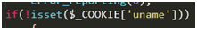
首先，来到程序的第一个分支点，$_COOKIE这个变量是能获取到报文头部所包含的cookie字段其中的信息，我们可以分析出如果要执行这个if语句，则cookie的’uname’字段中是没有信息的。
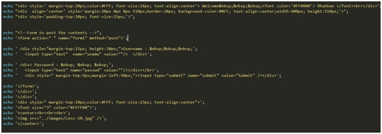
那么网页首先显示的是跟前几个关卡相似的登录页面。
接下来来到第一个分支点里的又一个分支点
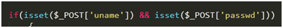
可以看出当我们在网页中的表单中提交用户名和账号信息时，则开始执行这个if语句
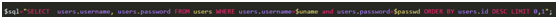
就开始查询数据库里的用户名和密码信息
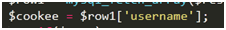
并且将查询结果的’username’字段中的用户名信息赋值给$cookee
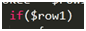
如果查询结果不为空
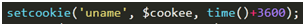
则设置将cookie中设置名为’uname’的字段，并给该字段赋值$cookee变量的值，也就是之前查询到的用户名信息，并且设置该字段的生存时间
如果查询结果为空，则返回一个查询失败的信息
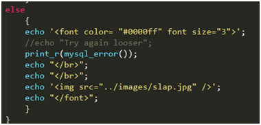
也就是说当我们在网页的表单中输入用户名和密码时，当查询结果不为空时，则在cookie中设置字段值
我们用burp抓包看看报文的详细信息
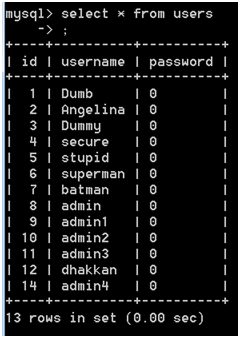
我们先查询一下users表里的信息
接着输入一个users表中存在的用户名和密码
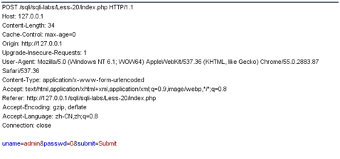
这是我们提交表单给服务器的POST报文，来看看服务器这时返回的信息是什么
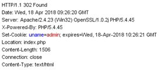
可以看出服务器设置了cookie信息
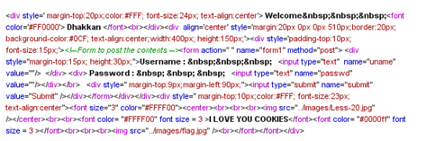
并且返回这些信息，可见这就是一开始的登录页面加上
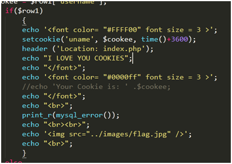
查询结果后返回的信息
那么我们放行这个请求报文，看看接下来发生什么
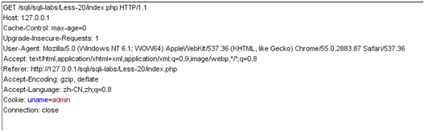
放行后出现了第二个请求报文，这是个GET请求报文，我们可以看出此时头部已经有了cookie信息，我们再来看看服务器的回应
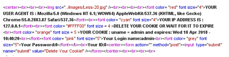
我们再回头看看源代码，发现此时执行了第二个节点，此时cookie中的’uname’字段已经有了信息，则执行了else语句
这个else语句中又包含了一个节点
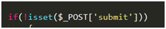
也就是当我们还未点击submit按钮时会执行这个if语句
然后
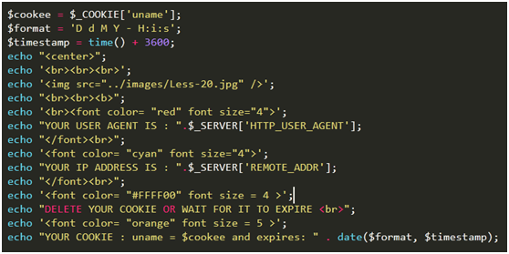
返回一些信息
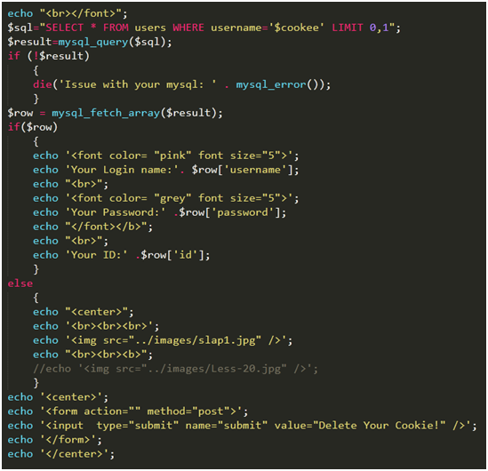
并且以cookee变量的值作为用户名进行数据库的查询
然后将查询到的信息输出出来，最后一行会出现一个submit按钮
接下来我们放行第二个报文
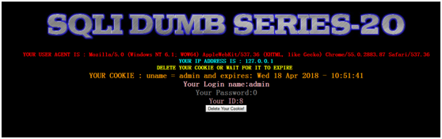
放行后可以看到网页发生了变化，也就是返回了还未提交submit时的信息
我们点击一下submit按钮，这时看看请求的报文格式
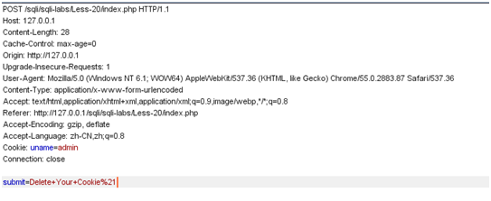
可以看出这是一个POST请求报文，这时还又cookie信息，我们再来看看服务器返回的报文
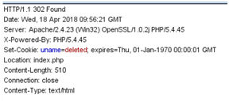
这时服务器发现cookie中的’expires’字段中的时间发生了变化，’uname’字段内容为空时，默认内容为deleted，并且返回
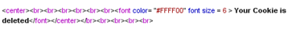
可见当我们点击submit按钮后执行了else语句
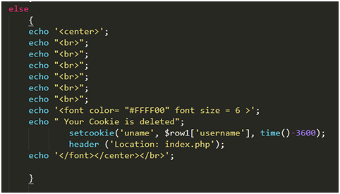
放行这个POST请求报文
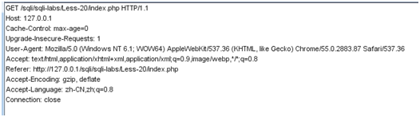
又出现了一个GET请求报文，看出此时cookie信息已经被删除了
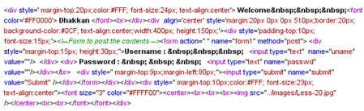
又回到了一开始的登录界面
这里就涉及了一个重定向“location”它的作用是不用用户输入网址，它会自动访问，一般是GET请求，所以我们之前能抓到两个请求报文，且网页最后显示是重定向后的最终页面